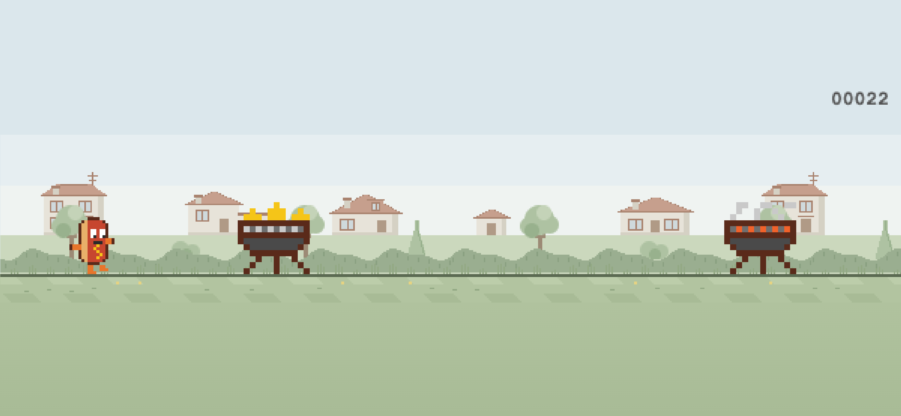
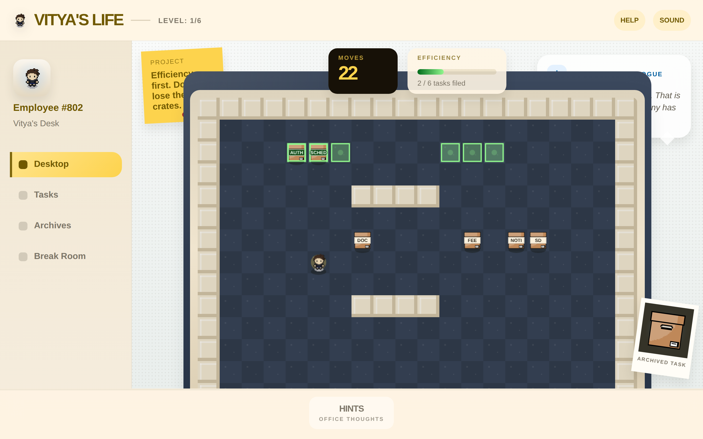
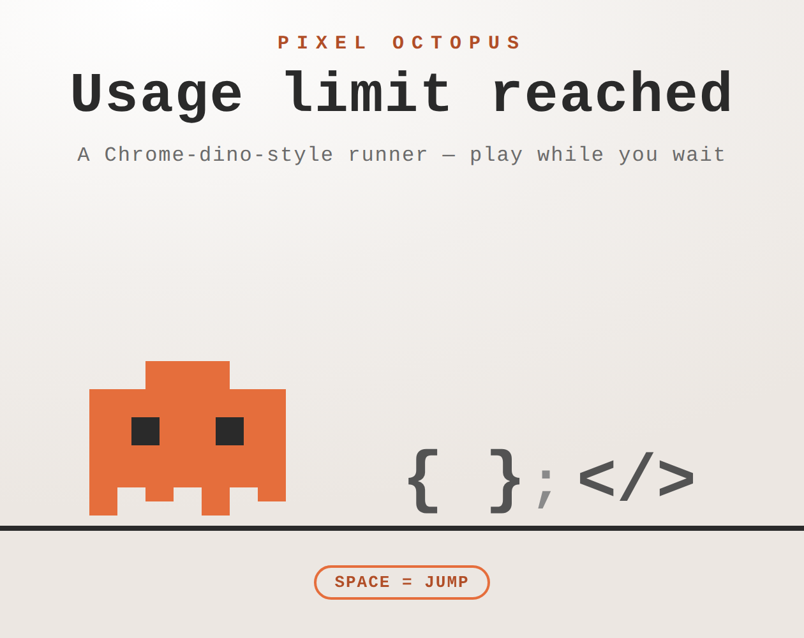

Released iOS endless runner
Hotdog Runner
Jump flaming grills, duck diving seagulls and help one tiny hotdog avoid becoming dinner as the garden shifts from day to night.
Independent game shelf
Vitya Games collects compact releases that start quickly, teach through play and leave room for a joke, a personal story or one very determined hotdog.
Game shelf
One released iPhone and iPad game, two more taking shape for iOS, plus two browser games — all built around a focused loop.

Released iOS endless runner
Jump flaming grills, duck diving seagulls and help one tiny hotdog avoid becoming dinner as the garden shifts from day to night.

Personal office puzzle
A sokoban-style browser game that turns routines, focus and inside jokes from 2024–2025 into six hand-built office shifts.

Pixel Octopus endless runner
A playful out-of-quota waiting screen where a pixel octopus jumps code blocks and dodges bugs in one self-contained HTML file.
How they play
Jump, push or run. Each game starts with an action you can understand immediately.
A loss should teach something visible, so the next attempt already feels smarter.
The mechanics are focused, but the theme is allowed to be personal, absurd or unexpectedly earnest.
More than games
Visit the central Markus Viktor page for experimental projects in Vitya Labs and production systems in Vitya Soft.
Open all collections